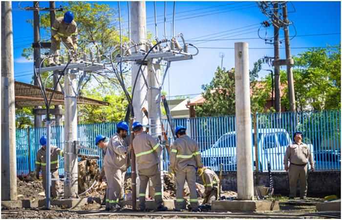
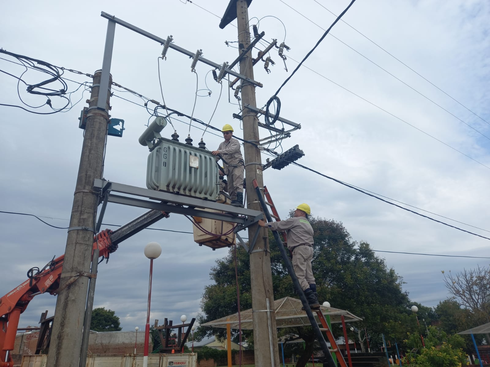
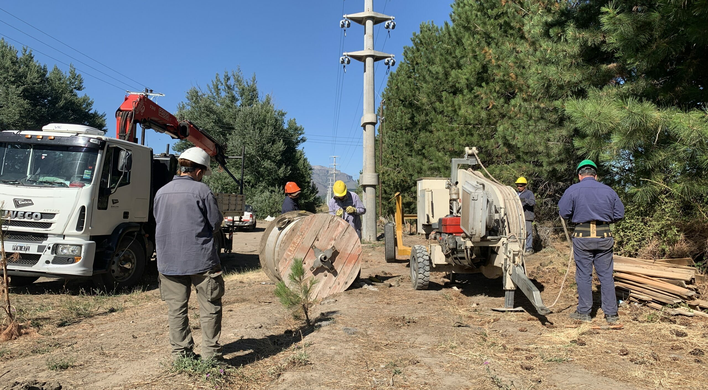
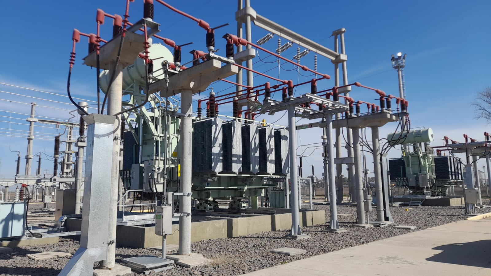
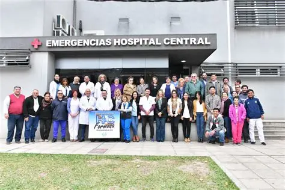
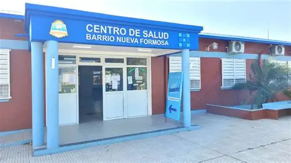
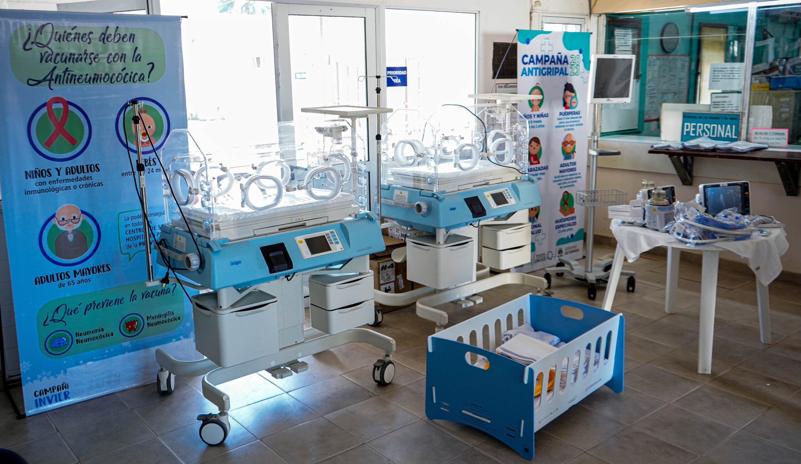
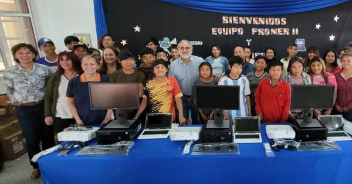
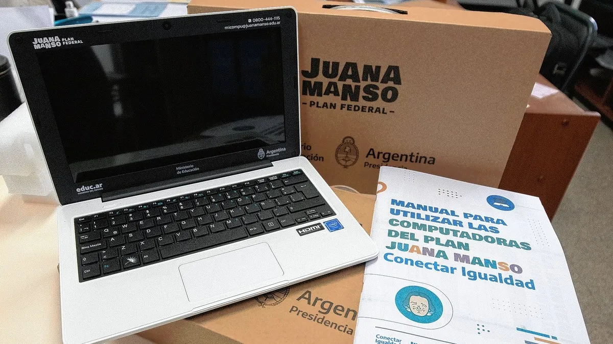
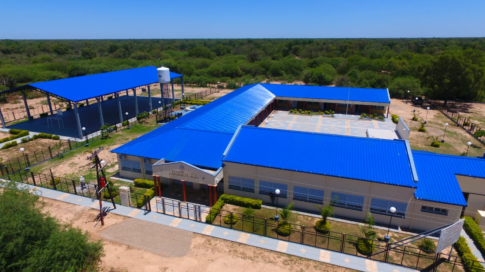

Los servicios públicos son esenciales para garantizar el bienestar de la población y el funcionamiento de las actividades económicas.
Históricamente, uno de los mayores desafíos de Formosa fue extender el servicio eléctrico a localidades alejadas y zonas rurales.
Con el crecimiento poblacional y económico se ampliaron:




La disponibilidad de energía resulta indispensable para el funcionamiento industrial y la incorporación de nuevas tecnologías.
El acceso al agua potable ha mejorado significativamente mediante la ampliación de redes urbanas y obras de infraestructura hídrica.
Actualmente existen industrias provinciales dedicadas a la producción de insumos para potabilización del agua, contribuyendo tanto al desarrollo industrial como al fortalecimiento de los servicios públicos.
El sistema sanitario provincial experimentó una expansión progresiva mediante:
Estos avances permitieron ampliar la cobertura sanitaria en distintos puntos del territorio provincial.



La educación también se ha beneficiado de mejoras en infraestructura y conectividad.
Entre los cambios más importantes se encuentran:



La incorporación de herramientas tecnológicas ha transformado las modalidades de enseñanza y aprendizaje.
Las mejoras en rutas, caminos y comunicaciones facilitaron la integración de localidades alejadas con los principales centros urbanos.
Además, la expansión de internet y telefonía móvil permitió una mayor conexión entre los ciudadanos y los servicios del Estado.